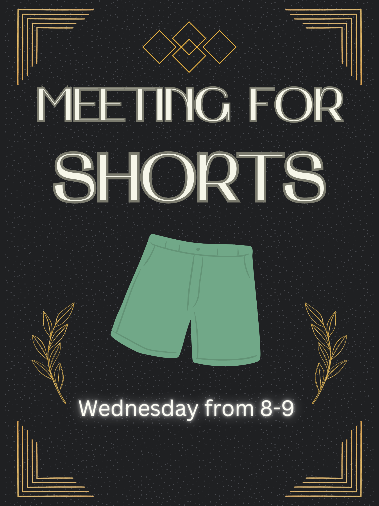

William Rodriguez
I am a 2nd year film student at the University of California Riverside. At this school I have learned to not only accel in all my academic studies but have learned much about the art of filmmaking and my jounrey throughout it. I believe that working as a video production assistant would help me in my path towards becoming a filmmaker myself. When seeing the required responsibilities of the video production assistant I was happy to see that not only do I meet many of those requirements, but this opportunity could help me grow and better understand the world of filmmaking. Having friends who participated in this job before, I wanted to know what they learned as well and expand my experience in film. Since starting high school I have worked diligently in the artistic world both on and off the stage through my Showchoir In-Sync. Being a section leader and dance captain in the choir allowed me to help lead others through rehearsals and numbers which they struggled with. I believe my experience in the tech crew as well as being tech director for my junior and senior years also helps me understand the work required to manage equipment and creativity when working behind the scenes on projects. Ever since joining UCR, I wanted to pursue a more filmmaking criteria for my work, and joining the R’Shorts club allowed me to expand my knowledge on a different side of working behind the scenes that I had not done before. Being a grip and then right after that a gaffer was a huge step for me in my knowledge of not only the equipment used in videos, but the etiquette required while on set and working with a crew.I believe the knowledge I gained from both R’Shorts and Showchoir would allow me to be an invaluable asset while working as a video production assistant. Not only being able to multitask, lead others, and memorize and categorize equipment being used, but I also understand the responsibility of making sure each video made is of a high quality. I have this year as well been able to innovate my experiences in film making drastically. I have written and driected my own short film, which had showed me the amount of work and effort required to make somegthing you're truly proud of. And I was also a first assistant director, whcih allowed me to be shown a more logistical side to filmmaking which has helped me on my path towards becoming a producer.
Enter bio here
Enter bio here
Experience
Production Manager
• Managed equipment for R'Shorts
• Used equipment for filming a variety of short films
• Managed on set logistics and location scouted for films
Teaching Assistant
• Ran sessions to help students learn how to code
• Reviewed and graded student coding projects
• Created educational content to help promote student education
• TA'd for over 400 students each academic quarter
Education
UC Riverside
University of California Riverside
University of California Riverside
Portfolio
